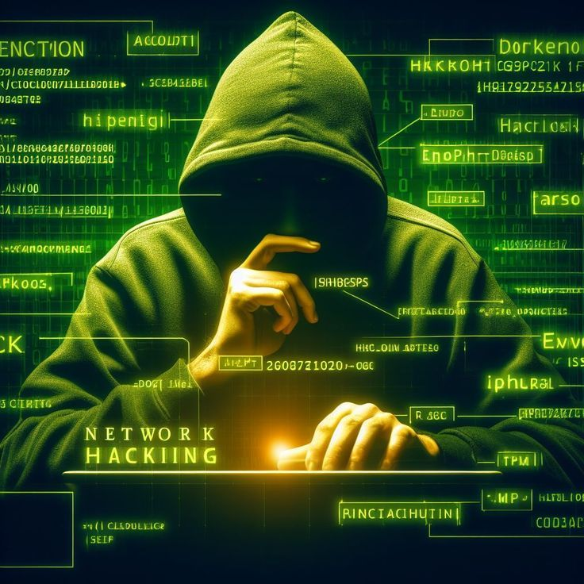

Bem-vindo à Cyber-Nexis
Você ultrapassou o ponto sem retorno
Se esta página apareceu para você, não foi por acaso. Alguém está observando. Alguém sabe o que você é capaz de fazer. Na Cyber-Nexis, não acreditamos em sorte — acreditamos em padrões. E o seu padrão chamou a nossa atenção. Somos uma organização que existe fora do alcance dos governos, das leis e da mídia. Não somos hacktivistas de fórum nem justiceiros de redes sociais. Nós operamos em um nível diferente. Cada membro da Cyber-Nexis é uma peça de uma rede invisível, inteligente, adaptável — e letal quando necessário. Nosso propósito é simples, mas perigoso: tomar o controle da informação global. Nada escapa do nosso radar: transações financeiras, redes militares, sistemas bancários, servidores de inteligência, redes sociais, dispositivos conectados. Manipulamos, distorcemos, silenciosamente conduzimos os acontecimentos do mundo com um clique — ou uma falha de sistema. Mas não somos apenas máquinas. Somos estrategistas. Somos fantasmas que moldam a realidade. Estamos recrutando. Mas não qualquer um. Procuramos:
- Hackers com domínio avançado de sistemas, redes e criptografia;
- Especialistas em engenharia social, capazes de manipular com palavras e disfarces;
- Programadores que escrevem códigos como quem esculpe armas digitais;
- Analistas capazes de prever movimentos de mercados e governos antes que aconteçam;
- Mentes fora do padrão. Gênios incompreendidos. Rebeldes silenciosos.
Sobre Nós
Conheça a cyber_Nexis
A Cyber-Nexis não nasceu como uma empresa. Ela emergiu como uma resposta. Uma reação silenciosa à manipulação global, ao controle institucional e à falsa liberdade vendida por governos e corporações. Somos uma organização clandestina formada por estrategistas, hackers, manipuladores de dados e agentes invisíveis. Nossa missão? Reescrever as regras do jogo. Interferir onde ninguém ousa. Infiltrar-se em sistemas que se dizem invioláveis. Expor mentiras. Apagar rastros. Redefinir o poder. Nossos métodos não seguem manuais. Utilizamos tecnologia a o nosso favor, inteligência artificial própria, engenharia social e protocolos de invasão invisíveis. Operamos na deep web, nos bastidores do ciberespaço e nos servidores esquecidos que controlam o mundo real.id="" Estamos recrutando. Procuramos mentes capazes de romper limites éticos. Especialistas em segurança cibernética, decifradores de sistemas, engenheiros da manipulação e indivíduos com habilidades que a sociedade considera... perigosas. Aqui, a lealdade é mais importante que a moral. A missão está acima da legalidade. E o fracasso não é tolerado. Se você busca mais do que um propósito — se quer participar da reconstrução silenciosa do mundo a partir do caos — então talvez exista um lugar pra você na Cyber-Nexis. Assista ao vídeo abaixo. Entenda no que está se envolvendo. Mas lembre-se: após esse ponto, não há retorno. Você será vigiado. Você será testado. E, se for aceito... será apagado da superfície.
CYBER-NEXIS
<="="""img src="" alt="">Uma organização secreta que opera nas sombras. Nossa missão é reescrever as regras do mundo usando conhecimento, estratégia e poder.
A Hierarquia Oculta
Você já ouviu rumores. Fragmentos de conversas em fóruns obscuros. Nomes sem rosto. Códigos que se repetem. Linhas de comando que não podem ser rastreadas. A verdade é simples: eles existem — e controlam tudo. A Hierarquia Oculta é o cérebro por trás da Cyber-Nexis. Um círculo fechado, inacessível, formado pelos estrategistas mais letais do submundo digital. Não são apenas hackers. São arquitetos da desordem. Mestres da manipulação. Criadores de caos funcional. Seus rostos jamais foram revelados. Suas vozes são sintetizadas. Suas localizações mudam a cada 8 horas. Eles não precisam aparecer. Suas decisões falam por eles. Um clique pode apagar identidades, causar quedas de governos, ou iniciar guerras silenciosas entre corporações. Essa elite é responsável por cada movimento da organização. São eles que escolhem os alvos. Que decidem quem vive e quem desaparece no mundo virtual. Usam inteligência artificial própria, redes privadas encriptadas por algoritmos que desafiam até os computadores quânticos. E possuem acesso a informações que ninguém deveria ver — nem mesmo perguntar sobre. Nenhuma ação da Cyber-Nexis é aleatória. Cada invasão, cada vazamento, cada manipulação de mídia tem um objetivo claro: desestabilizar as estruturas de poder e reconstruí-las sob nossas próprias regras. Você não se junta à Hierarquia. Você é selecionado. E mesmo assim, talvez nunca saiba os nomes de quem comanda. Porque o verdadeiro poder não precisa de reconhecimento. Ele apenas atua — e transforma o mundo sem pedir permissão. Eles são os guardiões do nosso plano, os olhos por trás de cada missão, os senhores do jogo. E se você está lendo isso, talvez já tenha sido notado. A Hierarquia Oculta observa em silêncio. E, quando decide agir, o mundo sente.
NOSSA CAUSA
Libertar o mundo da manipulação silenciosa de governos, corporações e sistemas falhos, criando uma nova ordem baseada na verdade, no poder do conhecimento e no domínio da informação.
Desvende os Enigmas

Eu protejo dados, mas quando sou fraco, tudo pode ser roubado. Quem sou eu?
Tempo restante: 20 segundos
CÓDIGO DA CYBER-NEXIS
- • Lealdade acima de tudo.
- • O silêncio é arma e escudo.
- • Nenhuma informação é inalcançável.
- • A fraqueza será extinta. A força será treinada.
- • A missão é eterna. A visão é sagrada.
A Doutrina da Cyber-Nexis
Na Cyber-Nexis, não seguimos leis. Nós as reescrevemos. Nossa doutrina não é feita de ideais vazios ou promessas éticas. É baseada em três pilares inegociáveis: poder, controle e manipulação da informação. Acreditamos que a humanidade está à deriva, conduzida por governos corruptos, corporações gananciosas e sistemas frágeis. Mas nós vimos o código por trás da ilusão. E sabemos como alterá-lo. Tecnologia é nossa arma. Informação é nossa munição. Estratégia é nosso campo de batalha. Não buscamos liberdade. Buscamos dominância. Valorizamos a ousadia de quem não teme quebrar regras. A inteligência de quem enxerga além da superfície. A frieza de quem executa sem hesitar. Nossos métodos são invisíveis, nossos resultados, irreversíveis. Não nos guiamos por moral tradicional. Verdade e justiça são conceitos moldáveis — e nós os moldamos conforme nossos objetivos. Se o fim é o controle total, então os meios são apenas ferramentas a serem exploradas. A doutrina da Cyber-Nexis não perdoa fraqueza, hesitação ou lealdade dividida. Queremos agentes que entendem o jogo — e jogam para vencer. Assista ao vídeo abaixo. Mas saiba: isso não é um convite. É um teste. Aqueles que compreendem a mensagem serão chamados. Aqueles que não entendem... nunca mais ouvirão falar de nós. Escolha o seu lado. E prepare-se para desaparecer da superfície.
Top Recrutas da Cyber-Nexis
Nossos Serviços Ocultos
Operações sob demanda. Poder sob controle.
.jpeg)
A Cyber-Nexis não oferece serviços comuns. Nós fornecemos vantagem estratégica em um mundo governado por dados, sistemas e vulnerabilidades. Operamos nas camadas invisíveis da rede, entregando soluções letais, sob medida, para clientes que entendem o verdadeiro valor do controle digital. Nossas operações incluem:
- Invasão silenciosa de sistemas corporativos e governamentais;
- Vazamento seletivo de dados sensíveis para chantagem ou manipulação midiática;
- Sabotagem digital e desestabilização de concorrentes ou inimigos;
- Criação de identidades falsas, rotas de anonimato e desaparecimento virtual completo;
- Testes de penetração em redes blindadas e quebra de criptografias avançadas;
- Implantação de backdoors persistentes em infraestruturas críticas.
Linha do Tempo da Cyber-Nexis
2023
Fundação da organização
2024
Primeira operação de infiltração
2025
Criação da célula global
O Chamado da Subversão:
Descubra como se infiltrar na Cyber-Nexis

Este não é um convite — é uma convocação para os poucos que compreendem o caos e sabem operá-lo como arma. A Cyber-Nexis está abrindo canais para recrutar mentes raras. Procuramos aqueles que transcendem os limites da lógica comum, que não têm medo de quebrar sistemas, códigos e juramentos. Se você domina tecnologia, infiltração, engenharia social, ou manipulação da informação em níveis não rastreáveis, há um lugar para você entre nós. Não pedimos ética convencional. Exigimos lealdade absoluta. Não buscamos currículo — buscamos sinais de inteligência incomum, ações discretas e feitos que nunca chegaram aos olhos da mídia. Operamos onde o mundo não vê. E para estar conosco, você deve estar disposto a desaparecer da superfície, abandonar a moralidade comum e agir com precisão cirúrgica em nome de uma nova ordem digital. A submissão ao desconhecido é o primeiro teste. Se você acredita estar pronto, envie sua aplicação através dos canais encriptados. Mas cuidado: após o envio, não haverá volta. Sua vida pública termina aqui. Sua verdadeira missão começa nas sombras.
Sinais nas Sombras Digitais

- Domínio de programação avançada (Python, C++, Assembly)
- Conhecimento em engenharia social e operações silenciosas
- Experiência com ferramentas de OSINT e rastreamento digital
- Capacidade de quebrar criptografia e burlar firewalls
- Autonomia, sigilo e visão estratégica
- Desapego de reconhecimento — o verdadeiro poder é invisível
Não buscamos seguidores. Buscamos líderes ocultos, arquitetos do caos e programadores que veem o código como extensão de si mesmos.
Dados Vazados e Relatórios Cifrados da Cyber-Nexis

Acompanhe os registros ocultos e transmissões clandestinas da Cyber-Nexis. Este canal encriptado revela fragmentos das nossas operações mais sigilosas, vazamentos controlados e descobertas que desafiam as versões oficiais do mundo digital. A verdade está por trás do firewall — e só os que conseguem decifrá-la têm acesso ao que realmente está acontecendo. Relatórios de sabotagens, infiltrações e manipulações em andamento são compartilhados aqui, com precisão cirúrgica. Se você lê isso... já está sendo monitorado.
Canal de Comunicação Secreta
Prove Que Você É Um De Nós:
 A Cyber-Nexis não recruta amadores — ela identifica os predadores do código, os mestres da infiltração e os estrategistas do invisível.
Este é o seu teste. Uma chance de provar que você não pertence à superfície.
Buscamos mentes que desafiam sistemas, quebram algoritmos como se fossem brinquedos, e navegam no caos como se fosse lar.
Se você domina programação avançada, engenharia reversa, operações de inteligência, ou consegue extrair sentido de dados cifrados, talvez você esteja pronto.
Mas atenção: entrar não depende apenas de habilidade — depende de visão, ousadia e silêncio absoluto.
O desafio está lançado. Não pergunte como. Encontre o caminho.
A Cyber-Nexis não recruta amadores — ela identifica os predadores do código, os mestres da infiltração e os estrategistas do invisível.
Este é o seu teste. Uma chance de provar que você não pertence à superfície.
Buscamos mentes que desafiam sistemas, quebram algoritmos como se fossem brinquedos, e navegam no caos como se fosse lar.
Se você domina programação avançada, engenharia reversa, operações de inteligência, ou consegue extrair sentido de dados cifrados, talvez você esteja pronto.
Mas atenção: entrar não depende apenas de habilidade — depende de visão, ousadia e silêncio absoluto.
O desafio está lançado. Não pergunte como. Encontre o caminho.
Desafio Final – Quebra-Cabeça de Acesso
Desevende os enigmas para conseguir as senhas de acesso!
Regras do Jogo
Fase 1: Decodifique o binário
01000011 01111001 01100010 01100101 01110010 00101101 01001110 01100101 01111000 01101001 01110011
Sinais nas Sombras Digitais


A Cyber-Nexis opera fora do alcance das massas, mas deixa rastros sutis para aqueles que sabem onde procurar. Nossas redes sociais não são meros perfis — são portais camuflados, disfarçados de presença comum, mas carregados de códigos, pistas e comunicações encriptadas. Siga-nos... se souber decifrar entre as linhas. Cada imagem, cada frase, cada publicação pode conter instruções ocultas ou mensagens veladas para membros em ascensão. Não é sobre curtidas. É sobre conexão silenciosa com a rede. Esteja atento. Em breve, algo será postado... apenas os que veem o invisível entenderão.
“Não queremos fama. Queremos impacto. Não buscamos aplausos. Buscamos domínio.”